Monitoramento de baterias
Tensão e consumo dos bancos de serviço, motor e gerador, com histórico completo.
Sistema de monitoramento e manutenção inteligente
Sensores a bordo, monitoramento 24 horas e alertas em tempo real no seu celular — com inteligência artificial integrada e gestão completa de manutenções.
Compatível com rede NMEA · IA integrada · Suporte em português
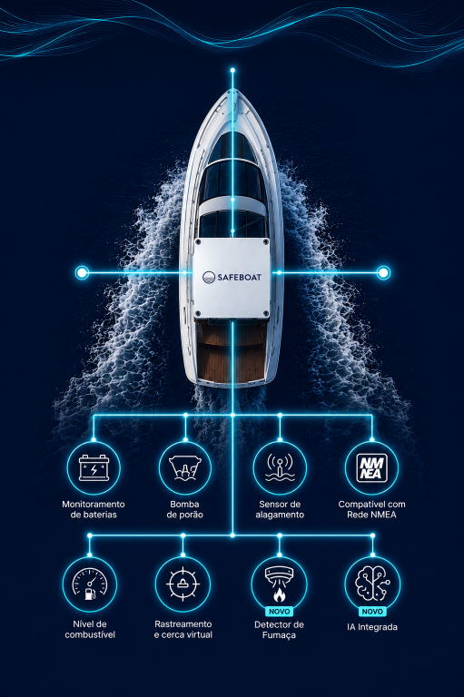
O sistema
A central SAFEBOAT conecta os sensores da sua embarcação e envia cada informação para o aplicativo — onde quer que você esteja.
Tensão e consumo dos bancos de serviço, motor e gerador, com histórico completo.
Acionamentos e tempo de funcionamento — detecte infiltrações antes que virem problema.
Alerta imediato ao primeiro sinal de água onde ela não deveria estar.
Acompanhe tanques e consumo por hora dos motores em tempo real.
Posição em tempo real e alarme de âncora: se o barco sair do raio, você fica sabendo.
Detecção precoce de incêndio na cabine ou na casa de máquinas.
Pergunte como está o seu barco pelo WhatsApp e receba o diagnóstico na hora.
Integra com a instrumentação que já existe no seu barco — NMEA 2000 e J1939.
Cobertura completa
Do rastreio ao motor: cada grandeza acompanhada 24 horas por dia, com histórico e alertas no aplicativo.
Sua embarcação não tem rede NMEA? Nós criamos uma e convertemos os dados dos motores (J1939) — lendo tudo o que estiver a bordo.
O aplicativo
Aberto o app, você vê em segundos o que importa: sensores críticos, posição, navegação e a saúde de cada sistema de bordo.
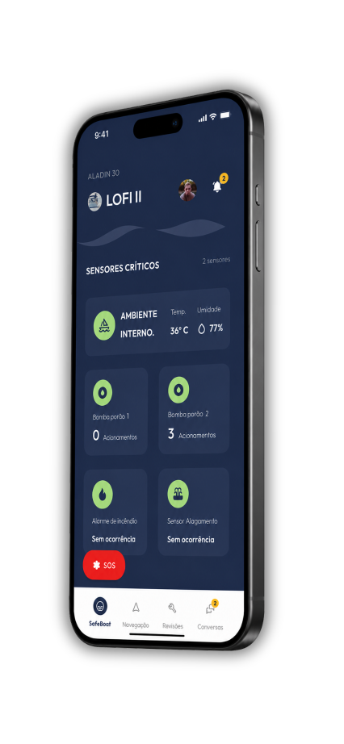
Bombas de porão, incêndio, alagamento, temperatura e umidade — com botão SOS sempre à mão.
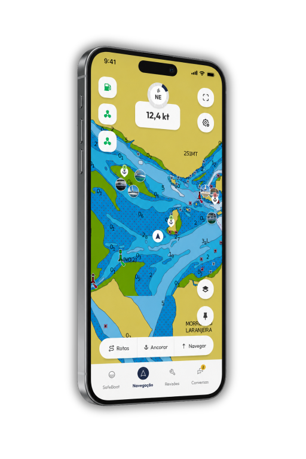
Cartas oficiais, rumo, velocidade, rotas e fundeio com alarme de âncora integrado.
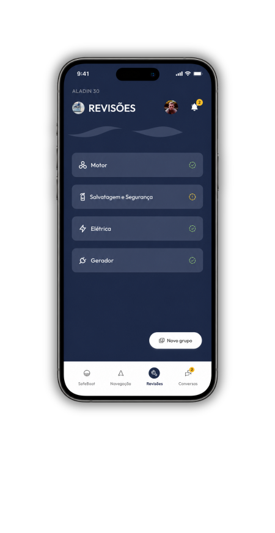
Revisões de motor, elétrica, gerador e salvatagem organizadas, com avisos de vencimento.
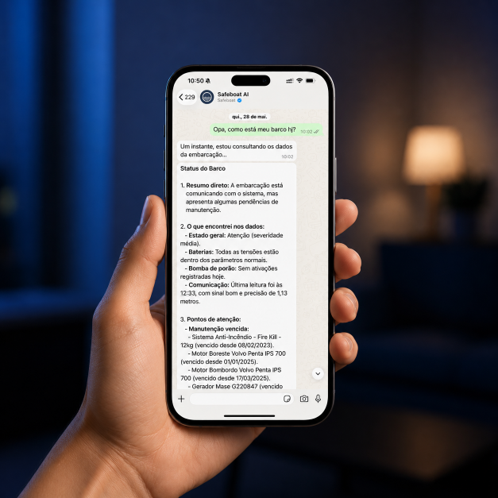
IA integrada novo
“Opa, como está meu barco hoje?” — pergunte no WhatsApp e a Safeboat AI consulta os sensores, o histórico e as manutenções da embarcação para responder na hora.
Para frotas, marinas e gestores
Dashboard multiembarcação com KPIs operacionais e de risco: alertas, avisos, bancos de bateria, bombas de porão e manutenções de toda a frota em uma única tela.
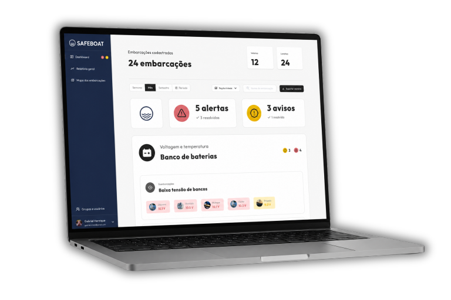
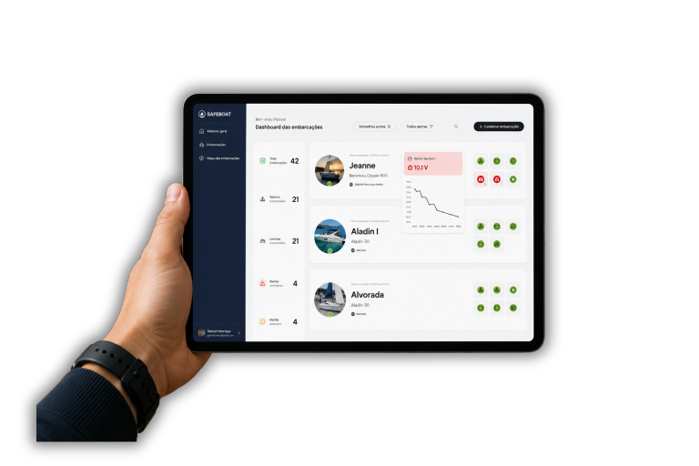
Hardware
Equipamentos desenvolvidos para o ambiente náutico: robustos, discretos e instalados sem interferir na estética da embarcação.
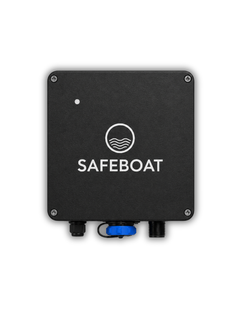
O cérebro do sistema a bordo: conecta sensores e transmite tudo para a nuvem.
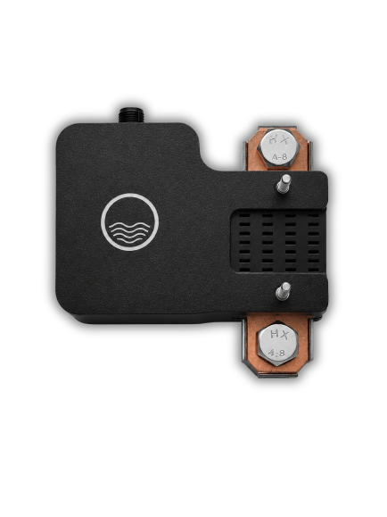
Mede tensão e corrente diretamente no banco, com precisão.
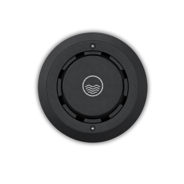
Detecção precoce de incêndio com alerta imediato no app.
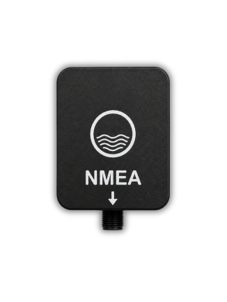
Lê a rede NMEA 2000 da embarcação e integra ao SAFEBOAT.
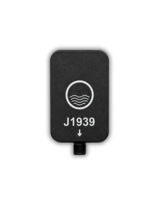
Telemetria de motores: RPM, temperatura, pressão e consumo.
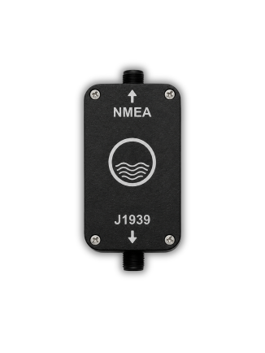
Leva os dados dos motores para a rede NMEA da embarcação.
Câmeras já disponível
Veja sua embarcação ao vivo a qualquer hora — mesmo na escuridão total. As câmeras SAFEBOAT com infravermelho vigiam cabine, cockpit e casa de máquinas e ficam integradas ao app, junto com os demais sensores.
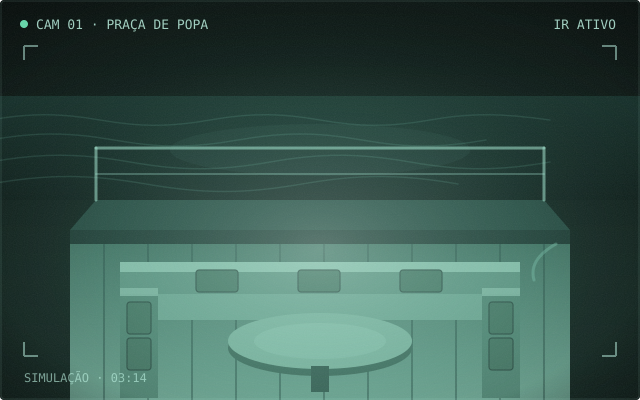
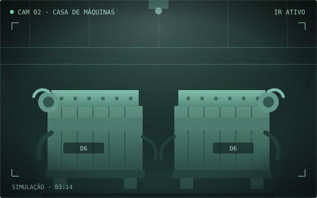
Em desenvolvimento
Nosso laboratório está levando a manutenção preditiva para dentro do casco. Os próximos lançamentos SAFEBOAT:
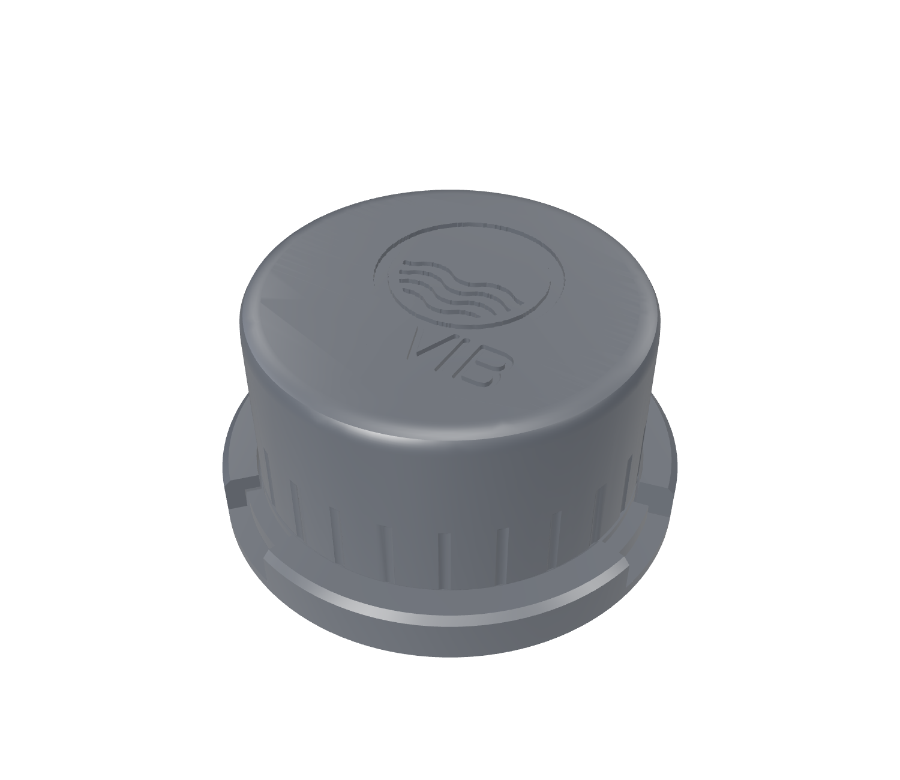
Sensores que aprendem a assinatura de vibração dos seus motores — com cancelamento do movimento do mar — e avisam sobre desalinhamentos, folgas e desgastes antes da falha acontecer.
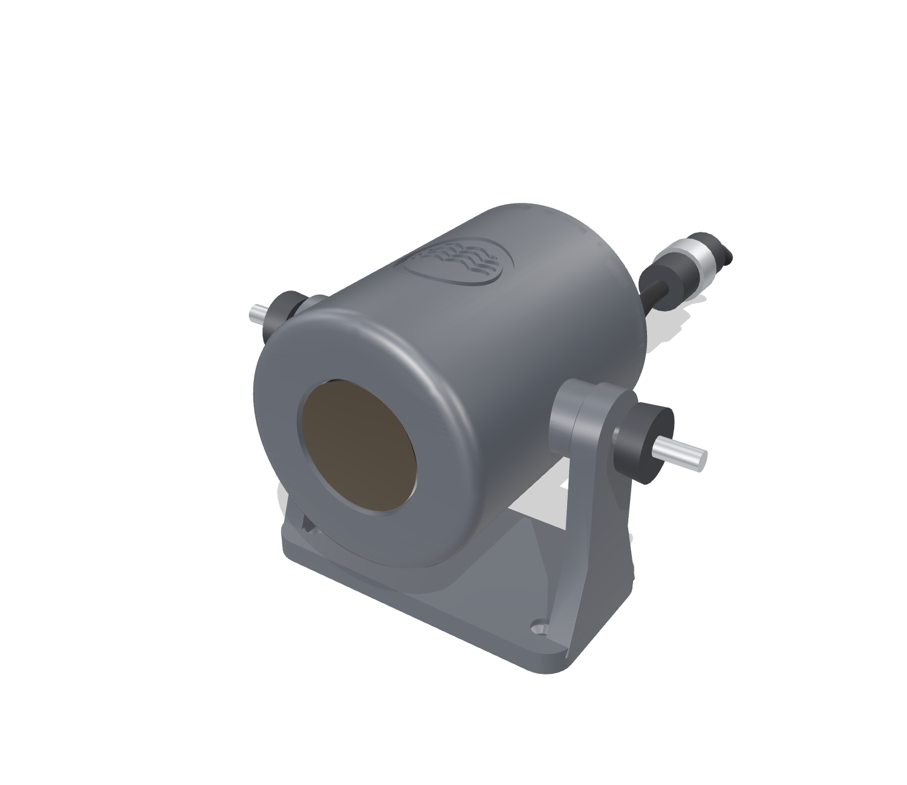
Visão térmica contínua da casa de máquinas com análise por inteligência artificial: pontos quentes e superaquecimentos detectados antes de virarem incêndio.